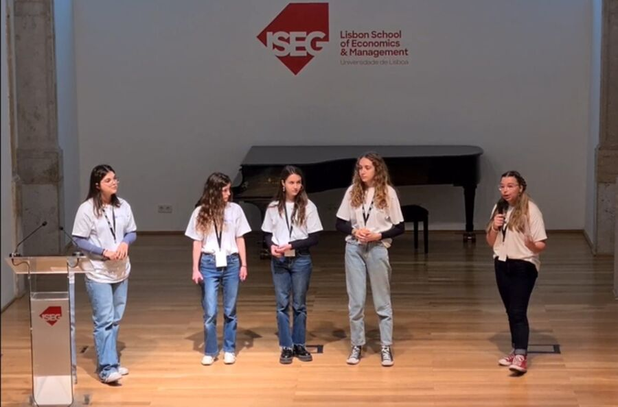

Quem sou
Sou a Maria Leonor. Adoro unir estética e utilidade, criando peças que são tão agradáveis de usar quanto de ver.
Comunicação · Branding · Marketing
“Faço as coisas acontecerem com um toque de estilo.”
Estudante de Ciências da Comunicação na Universidade Católica Portuguesa. Transformo ideias em experiências visuais envolventes — funcionais, bonitas e com brilho.
Gosto de unir estética e utilidade, criando peças tão agradáveis de usar quanto de ver.
Sou a Maria Leonor. Adoro unir estética e utilidade, criando peças que são tão agradáveis de usar quanto de ver.
Exploro interfaces e experiências interativas com foco em tipografia marcante, imagens expressivas e gradientes suaves que evoluem com o progresso de quem as usa.
Procuro um visual ousado mas harmonioso: letras que se fazem notar, visuais fortes e cores fluidas que respiram movimento e motivação.
Branding & identidade visual
Desenvolvimento da identidade visual e de todos os materiais de stand para a presença da uPlayback num summit internacional de tecnologia — roll-ups, apresentação de produto, merchandising e sinalética, com uma linguagem coerente do primeiro cartaz ao último detalhe.

Empreendedorismo
Da ideia ao pitch: constituição da equipa, definição do produto, marca, plano de comunicação e vendas reais. O percurso terminou com a apresentação final em palco no ISEG — Lisbon School of Economics & Management.

Ensino
Acompanhamento individual de alunos do 2.º e 3.º ciclos a Português, Matemática e Inglês: planos de aula, fichas próprias e material de revisão feito à medida de cada aluno.
Faculdade de Ciências Humanas — Universidade Católica Portuguesa, Lisboa
Em curso · 3.º ano
20
A nota mais alta do curso, na cadeira que sustenta o trabalho que quero fazer: posicionamento, campanha e a ponte entre aquilo que uma marca é e aquilo que comunica.
18
Saber como os meios se transformaram é o que permite escolher hoje o canal certo — e reconhecer o que já foi tentado antes de o propor como novo.
18
A língua de trabalho dos projetos internacionais, como o branding que desenvolvi para a presença da uPlayback num summit fora de Portugal.
Tens um projeto, um estágio ou uma ideia por explorar? Fala comigo.